Data Registration
Only users who have ‘ALL’ access at the ‘CATALOG’ scope have access to Data Registration.
The Data Registration feature allows data administrators to crawl S3 paths and automatically discover data sets, infer their schema, and easily register them in the catalog.
Create a crawler
A crawler automatically connects to your S3 data store and discovers the tables there.
To create a crawler, use the inputs on the Data Registration page. Choose a name for your crawler and specify the S3 path for your bucket or folder in the format s3://my-bucket/my-folder/. Once you click ‘Create’, the new crawler will appear below in the list of crawlers with the status ‘Crawling…’. See here to diagnose any common errors during crawler creation.
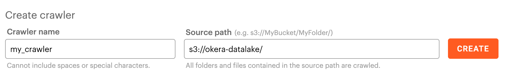
Note Please make sure Okera already has read access to your bucket. You won’t be able to create a crawler on a path Okera does not have read access to.
Register Tables
Once the crawler has finished crawling, its status will change to ‘Ready to register’.
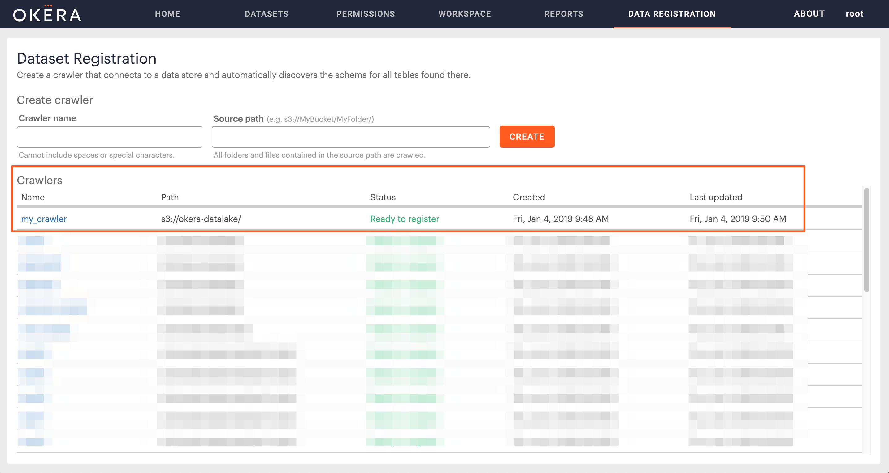
You can then click into the crawler and see a list of unregistered tables found. These paths have not yet been registered in the catalog.
Note Currently the crawler is only able to detect Parquet, Avro and CSV file formats.
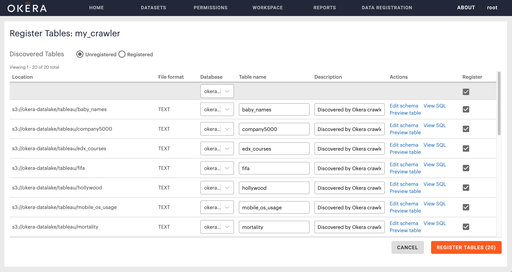
You can see the paths that were found to have already been registered in the catalog by toggling the view to ‘Registered’.
Note If you wish to register an already registered path as a new table you will need to do it manually through the workspace.
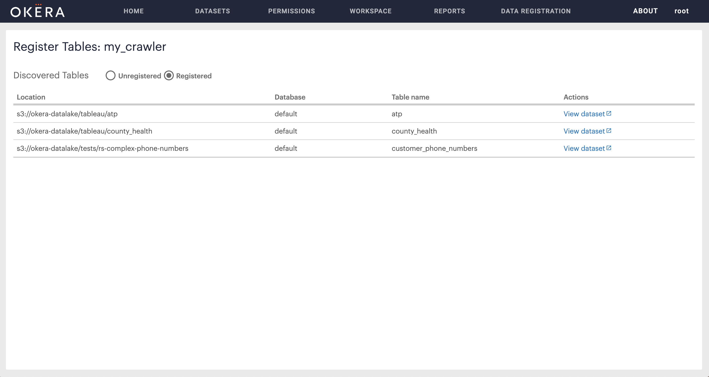
You can select the tables you wish to register and fill out some options:
- Choose a database to register to (you must select this)
- Edit the table name (the default name is based on the folder name)
- Edit the table description if you want to
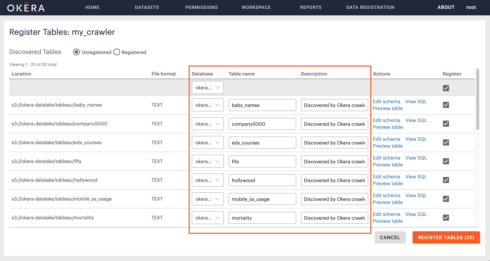
Actions
Preview table
You can preview the table with its schema.
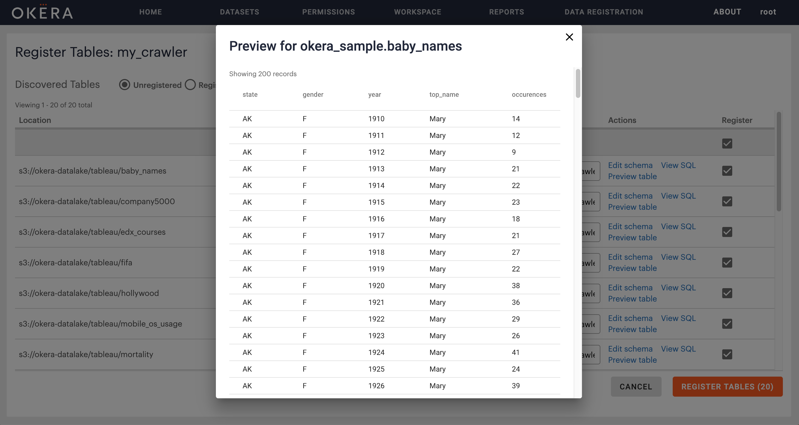
View/Edit schema
For Parquet and Avro files you can view the schema and verify it’s correct. As these are self-describing files you cannot edit these schemas during registration – if you wish to make a change to the schema you must edit the schema definition in the file.
For CSV files you can edit the column names and types, as well as set the ‘skip n lines’ option. You can also view the inferred delimiter. If the inferred delimiter is incorrect see here. Once you’re done editing, click the ‘save’ button to apply your changes.
If the table has been detected as partitioned, you will also see the partitioning columns listed here. If your partitions were not correctly discovered, see here.
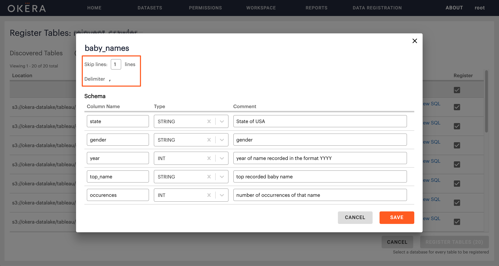
View SQL
When you click on “View SQL” you can see the SQL CREATE table statement for the table. From there you can copy it to the clipboard and run it manually in the workspace.
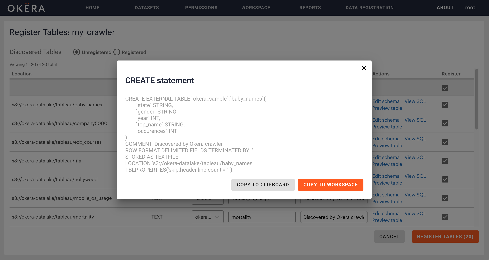
Completing registration
Once you have selected the tables you wish to register and selected the database you wish to register them to, you can click the “Register Selected” button to register the tables. You will then a see a dialog listing the tables that were successfully registered.
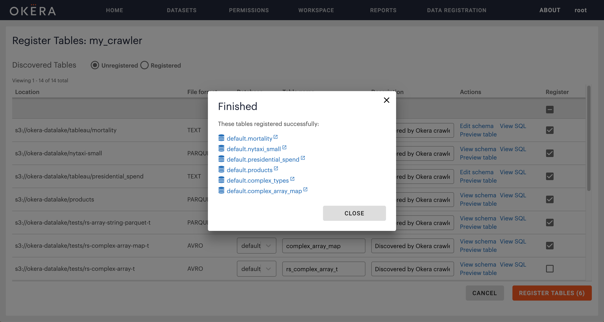
Errors during registration
In some cases there might be an error during registration e.g. Table already exists with the same name. The registration for that table will fail and you will be notified in the post registration dialog. You can see the specific error by clicking the error icon so you can try to rectify it before attempting to register the table again.
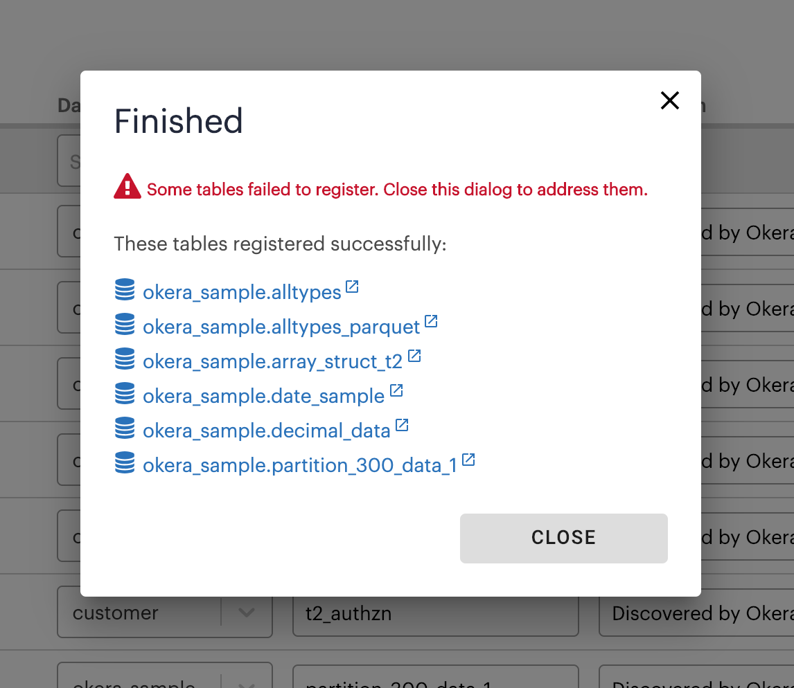
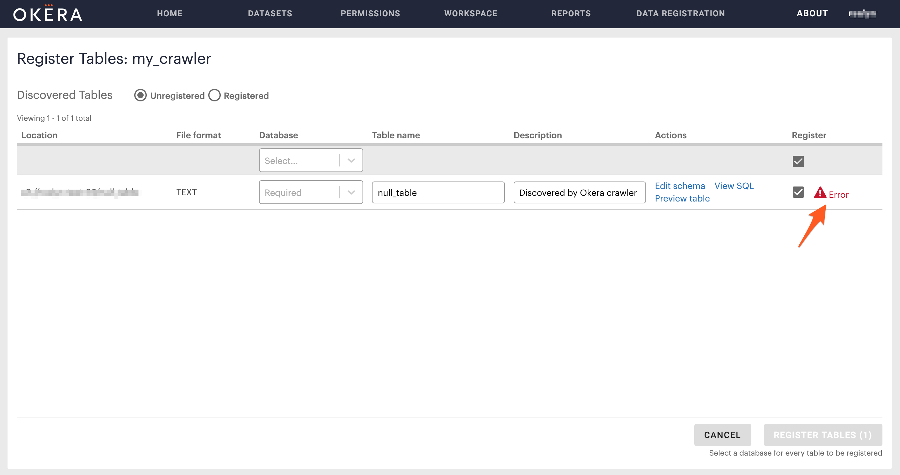
Common questions and troubleshooting
How do I delete a crawler?
You can delete a crawler by running DROP crawler <crawler_name> CASCADE in Workspace. Dropping a crawler does not affect any tables that were already registered from that crawler. Any in-progress changes to unregistered tables will be lost.
My file wasn’t discovered by the crawler
There may be some cases where the crawler is not able to discover a table or infer its schema correctly. Currently the crawler is only able to detect Parquet, Avro and CSV file formats. Please check that the filename has the file format specified e.g sample.txt.
Note You cannot have two crawlers with the same path. If the same tables have already been found by another crawler, they will not appear again on the duplicate crawler’s unregistered list. If a crawler path is a subset of another one, the first crawler created will contain the unregistered datasets for that path.
The inferred delimiter is incorrect
In some instances the crawler may not infer the correct delimiter for a CSV file. You can choose to either register the table manually by copying the SQL statement and editing the line ...ROW FORMAT DELIMITED FIELDS TERMINATED BY '|'
or alter the table to use the correct delimiter after registration by running the following command in the workspace ALTER TABLE <dbname.tablename> SET SERDEPROPERTIES ('field.delim'='.');.
My table was not discovered as partitioned correctly
The Okera crawler uses the folder directory naming structure in order to automatically detect partitions. Please make sure your data files have been separated into partitioning folders and have been named correctly.
An example:
s3://bucket/year=YYY1/
s3://bucket/year=YYY2/
s3://bucket/year=YYY3/
How is crawling handled?
When a new crawler is created, a crawler task gets added to the top of a background maintenance task queue for that cluster. There is a continuous thread running that picks up background maintenance tasks in this queue – automatic partition recovery is also run on this same thread.
How do I re-crawl a path?
Each crawler only runs a single-time. If you wish to crawl the same path again, you can delete the crawler and recreate a new crawler on the same path. You should avoid having two crawlers with the same path. If the same tables have already been found by another crawler, they will not appear again on the duplicate crawler’s unregistered list.
Errors during crawler creation
Crawler source Path ‘s3a://…/’ is not accessible
Okera does not have read access to this bucket, you will need to make sure the correct bucket policy has been added.
Crawler already exists
The crawler name you’ve chosen already exists. You will need to choose a unique crawler name.
Syntax error
Crawler name cannot contain spaces or special characters, except underscores e.g. !"#$%&'()*+,-./:;<=>?@[\]^`{|}~
Bucket does not exist
This bucket has not been found to exist in S3. Please check if the bucket path has been input correctly.